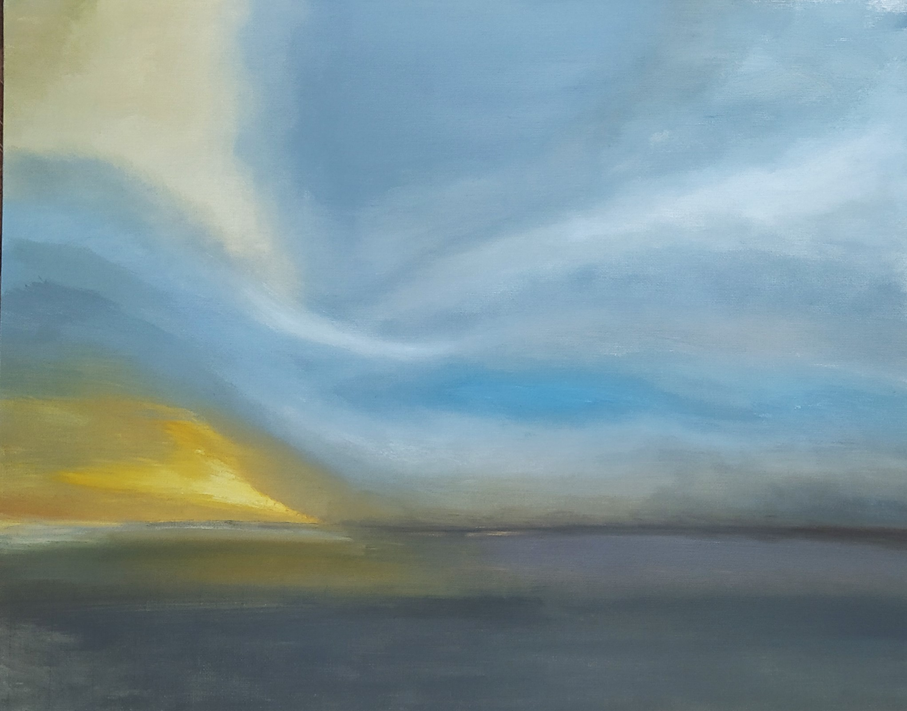
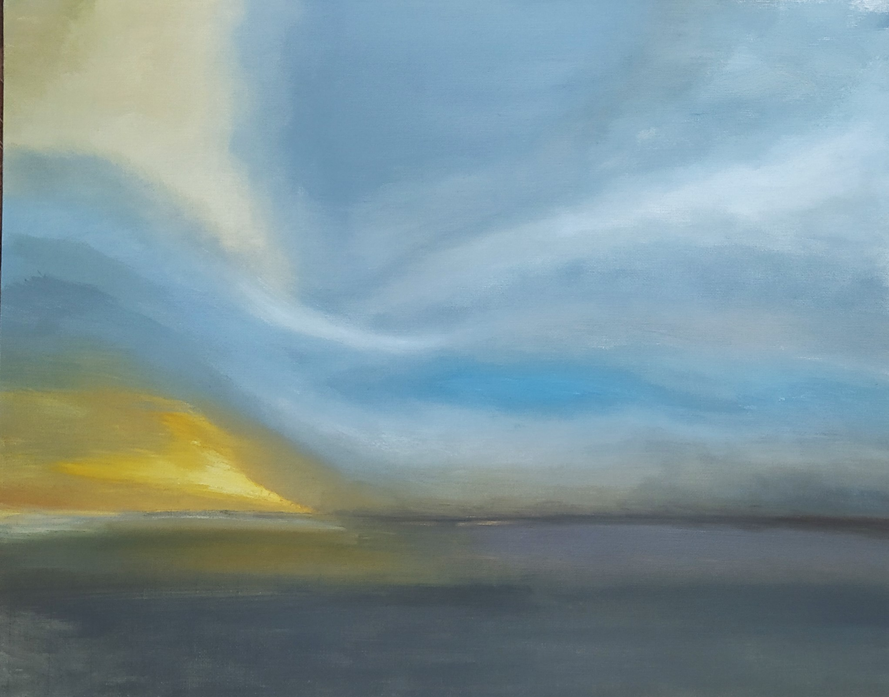
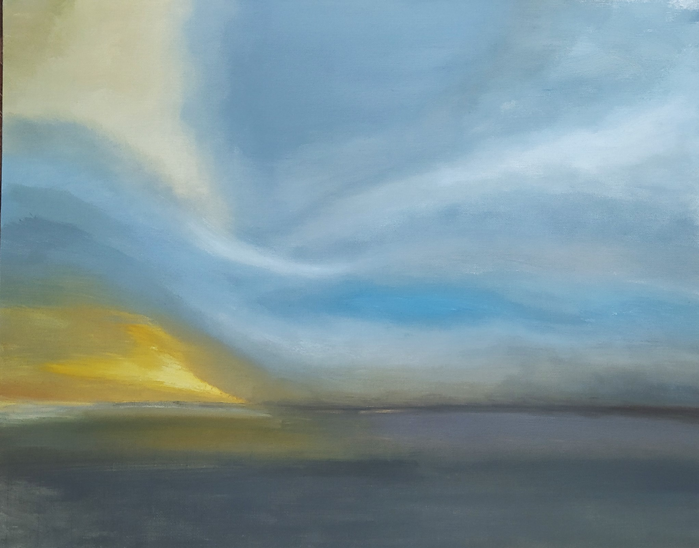

Галерея
Обо мне
Танец солнечного
света и облаков

02.02.22 Холст на картоне 40х50, масло
С окончанием вдохновляющего лета внезапно наступил долгий творческий перерыв.
И только зимой, ощутив вдохновение, я взялась за новую работу.
Выбранные цвета, неожиданно для сезона написания картины, по-весеннему свежие.
Дуновение ветра переплетает лучи света с облаками, словно в танце. Изображенные
изгибы облаков задают ощутимое движение. Акцентом является именно небо, на
холсте ему отдана большая часть. Скользящий по поверхности воды луч света
разбавляет ее серые оттенки.
 

 02.02.22 Холст на картоне 40х50, масло
С окончанием вдохновляющего лета внезапно наступил долгий творческий перерыв.
02.02.22 Холст на картоне 40х50, масло
С окончанием вдохновляющего лета внезапно наступил долгий творческий перерыв.